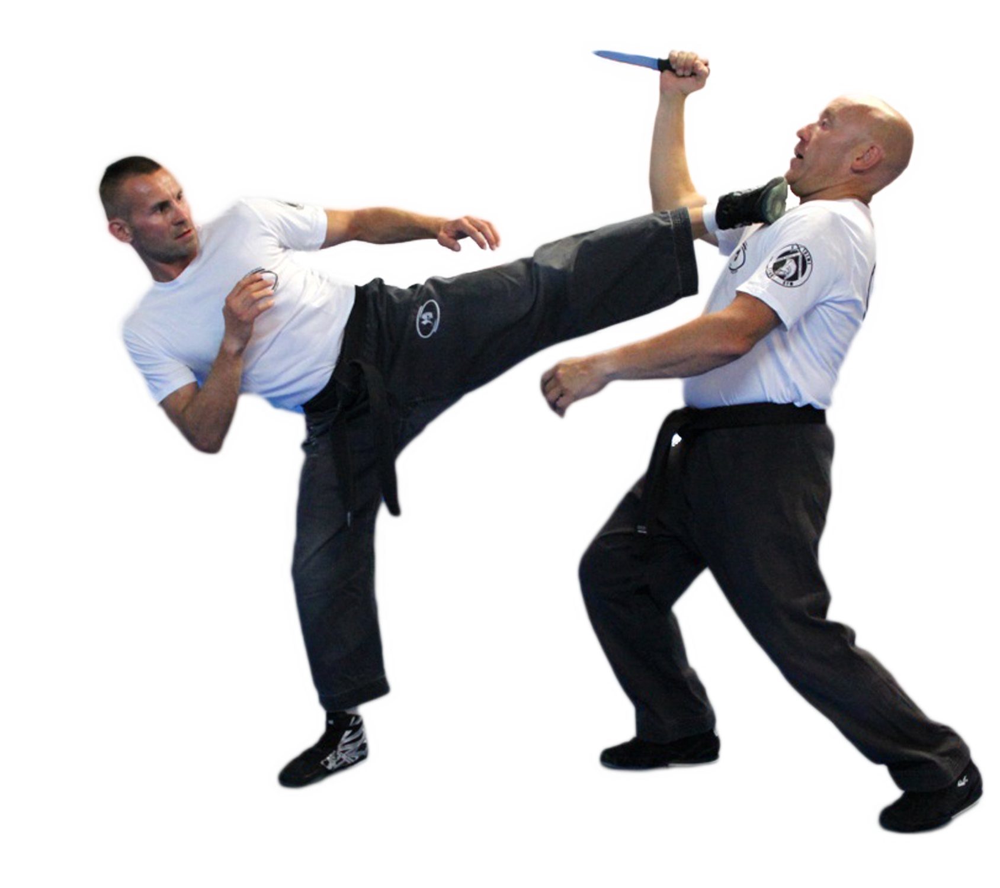

1 - Thrust knee high and forward 2 - Keep hip behind the kick 3 - Recoil hips returning to stance Kicking is one of the more difficult moves to use since there is so much that goes in to the movement making many factors go against you if not fast and accurate enough. Having your foot grabed out of the air on a kick can very bad for you.
